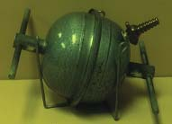
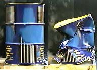

Atmospheric Pressure Examples
Click on any of the examples for further details
|  Madgeburg Hemispheres |
Savery Engine |
  Crushing a Can |
 Crushing a Steel Drum |
Atmospheric pressure
Pressure concepts
Vapor pressure applications
Atmospheric Pressure ExamplesClick on any of the examples for further details
|
Index Atmospheric pressure Pressure concepts Vapor pressure applications | ||||
| HyperPhysics***** Mechanics ***** Fluids | Go Back |